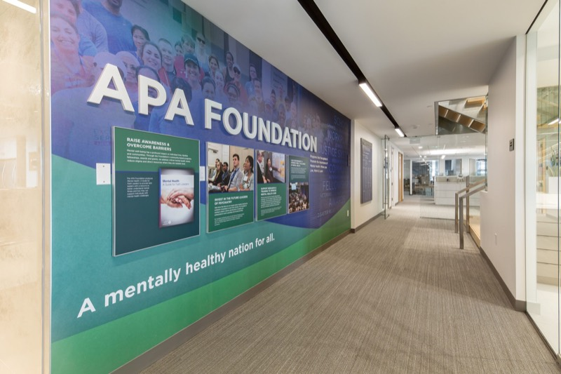
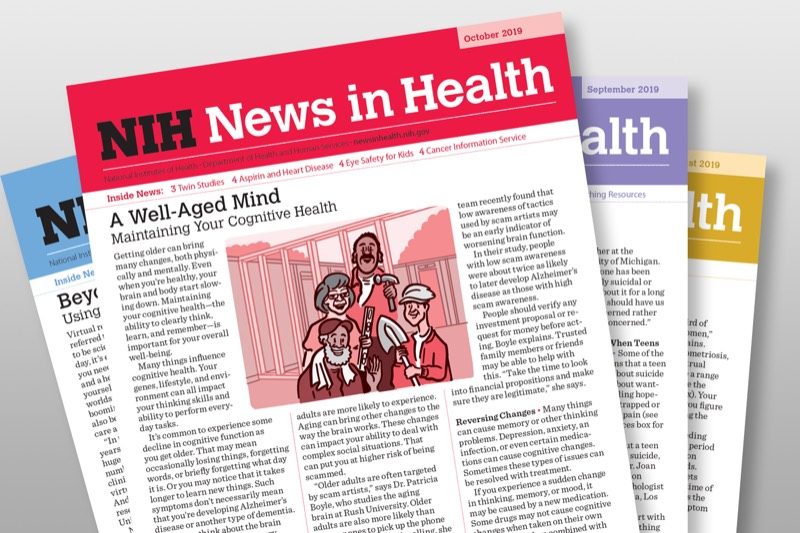
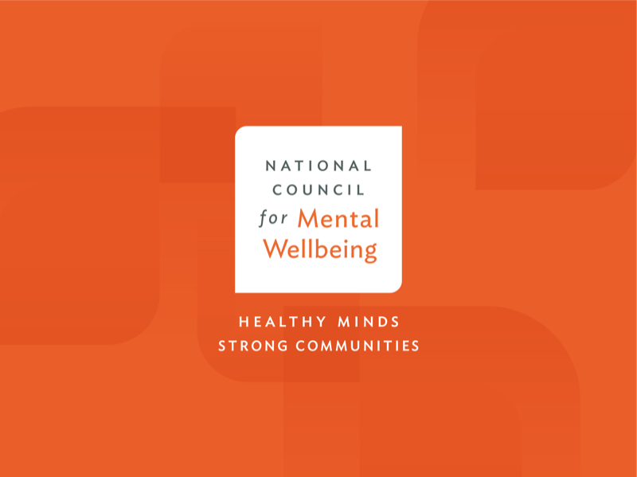
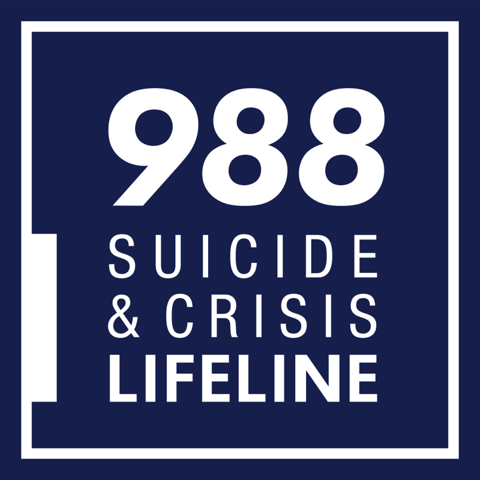
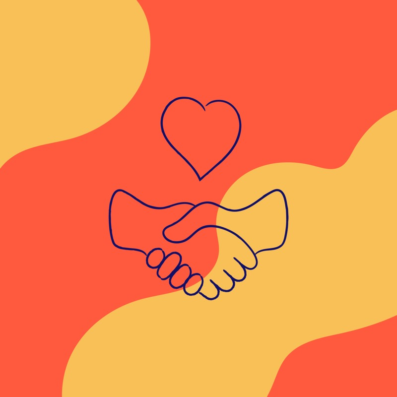

Mayo Clinic
Mayo Clinic
2 sources
Mayo Clinic. (2023, July 14). Personality disorders - symptoms and causes. Mayo Clinic; Mayo Clinic.
Before we refocused Disordered solely on mindfulness, we spent time researching various mental disorders to ensure our project approached these topics with care and accuracy. These resources helped us understand clinical definitions and language, so we could present information in ways that avoid stigma and promote awareness.
2 sources
Mayo Clinic. (2023, July 14). Personality disorders - symptoms and causes. Mayo Clinic; Mayo Clinic.
1 source
National Institute Of Mental Health. (2024). Depression. National Institute of Mental Health.

3 sources
Gorrindo, T. (2024). Psychiatry.org - Obsessive-Compulsive Disorder. Psychiatry.org.
2 sources

1 source
Wein, H. (2021, June). Mindfulness for Your Health. NIH News in Health.
1 source
2 sources
Lubos, L. (2012, July). (PDF) The Role of Colors in Stress Reduction. ResearchGate.
5 sources
It's often hard to find the right resources and support systems for mental health. Below is a collection of external resources dedicated to providing educational insight and extending support for those seeking professional guidance.
BetterHelp offers convenient online therapy with licensed professionals through messaging, phone, and video sessions. Designed to make mental health support more flexible, it's a great option for people with a busy schedule.
Visit BetterHelpTalkspace helps connect users with licensed therapists and psychiatrists for virtual care via text, audio, or video. Similar to BetterHelp, it's a flexible solution for therapy, medication management, and mental health support.
Visit TalkspacePsychology Today is a comprehensive directory where you can find therapists, psychiatrists, and support groups near you or online. Search by specialty, insurance, or location to find the right fit; contact information for providers are made easily accessible for any questions you might have.
Visit Psychology Today
The National Council for Mental Wellbeing champions advocacy for policies that support mental health and provides resources for community-based care. It also offers training and education for individuals and organizations, being the unifying voice behind mental health and substance recovery services in America.
Visit the National Council for Mental WellbeingMental Health America is widely regarded as the leading national nonprofit organization dedicated to promote mental health advocacy and well-being. Mental health screening tools, educational content, and more are available for free to focus on early intervention and community support.
Visit Mental Health AmericaSimilar to Mental Health America, Mind is one of the leading UK-based nonprofits that provides clear, practical information and offers support services for anyone struggling with mental health. Aiming to break down stigmas surrounding mental health, Mind provides lots of resources dedicated to understanding conditions and finding ways to cope.
Visit Mind
The 988 Crisis Lifeline provides free and confidential emotional support to people in suicidal crisis or emotional distress 24 hours a day, 7 days a week, across the United States and its territories. It combines local care and resources with a national network of over 200 local crisis centers, helping provide instant access to those who need it most.
Visit the 988 Crisis Lifeline
The Trevor Project is the leading suicide prevention and crisis intervention nonprofit organization for LGBTQ+ youth and young adults. With 24/7 support and information, The Trevor Project offers crisis services, peer support, and educational materials for greater advocacy.
Visit The Trevor Project